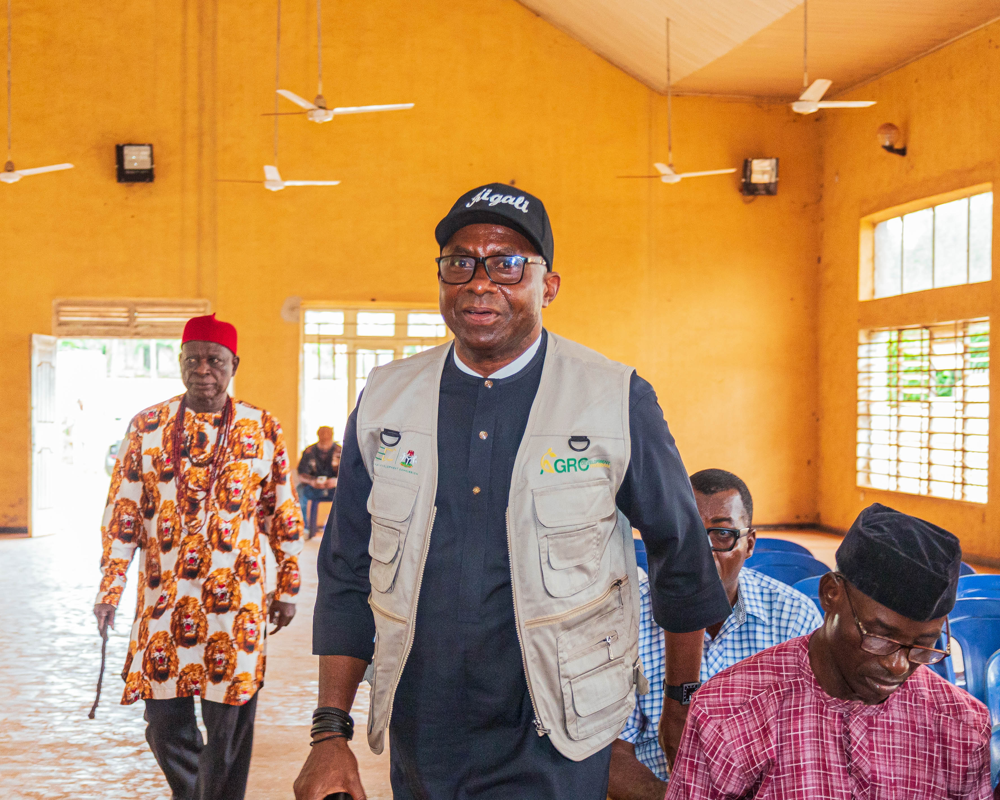
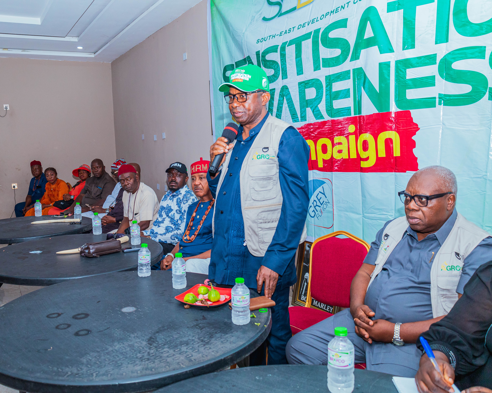

Priority Locations
Our Project Sites & Communities

Abia
Ibeku
- December 2025: Partnership with the Abia State Ministry of Agriculture on farm estates.
- Field assessments of oil palm and rubber estates.
- Assessment of the 10,000-hectare Ofiavu plot in Bende LGA.

Anambra
Ayamelum • Umunze • Omor
- February 2026: Comprehensive mapping of more than 25,000 hectares.
- Rice clusters in Ayamelum and Umunze.
- Ugbene ATC and the Lower Anambra Irrigation Project in Omor.
- Mapping supports plans for modern farm estates and agro-industrial hubs.

Ebonyi
Ngbo • Ohaukwu LGA
- September 2026: Renewed Hope Community Advancement Programme sensitisation in Ngbo.
- Community engagement in Ohaukwu LGA.
- Focus on the EM-VCAP and mineral value-chain development.

Enugu
Oji River • Uzo-Uwani • Nkanu East
- March 2025: Enugu Farm Settlement initiative in Nkanu West.
- February 2026: Vision 2050 convening.
- July 2026: Agro-mechanisation community engagements across three senatorial zones.
- Poultry Summit and multiple institutional events.

Imo
Ehime Mbano • Ngor Okpala • Obiangwu
- January & May 2025: Ngor Okpala and Obiangwu civic engagements.
- May 2025: Owerri roadmap disclosure.
- May 2026: Numo Farms and Petros Farms mapping.
- April 2026: FUTO ElectroLab-X commissioning.